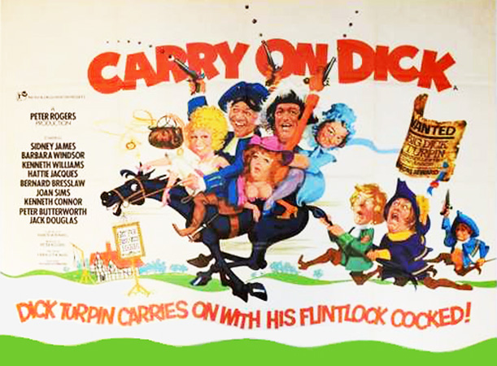
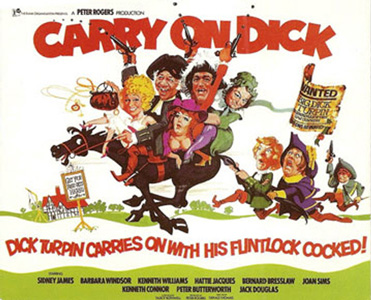

Peter Rogers
Michael Nightingale
In the year 1750, England is rife with crime and highway robbers. To stop the wave of chaos, King George sets up the first professional police force named the Bow Street Runners, under the command of the bellowing Sir Roger Daley (Bernard Bresslaw), and seconded by Captain Desmond Fancey (Kenneth Williams) and Sergeant Jock Strapp (Jack Douglas). The Runners are apparently successful in wiping out crime and lawlessness – using all manner of traps and tricks to round the criminals up. However their main target is the notorious Richard "Big Dick" Turpin (Sid James), a highwayman who has evaded capture and succeeded in even robbing Sir Roger and his prim wife (Margaret Nolan) of their money and clothing. After this humiliation, Turpin becomes the Bow Street Runners' most wanted man, and thus Captain Fancey is assigned to go undercover and catch the famous Dick Turpin and bring him to justice.
The Bow Street Runners nearly succeed in apprehending Turpin and his two partners in crime, Harriet (Barbara Windsor) and Tom (Peter Butterworth), one evening as they hold up a coach carrying faux-French show woman Madame Desiree (Joan Sims), and her unladylike daughters, "The Birds of Paradise." However, Turpin manages to outsmart the Runners, sending them away in Madam Desiree's coach.
Outraged by Strapp's incompetence, Captain Fancey travels with the sergeant to the village of Upper Dencher near to where the majority of Turpin's hold-ups are carried out. There they encounter the mild-mannered Reverend Flasher, who is really Turpin in disguise, with Tom as his church assistant and Harriet as his maidservant. They confide in the rector their true identities and their scheme to apprehend Turpin. They agree to meet at the seedy Old Cock Inn, a notorious hang-out for criminals and sleazy types, and where Desiree and her showgirls are performing. Fancey and Strapp pose as two on the run crooks – and Strapp dubs his superior "Dandy Desmond" – and they hear from the greasy old hag, Maggie (Marianne Stone), a midwife who removed buckshot from Turpin's buttock, that Turpin has a curious birthmark on his manhood. Strapp wastes no time in carrying out an inspection in the public convenience of the Old Cock Inn.
When the rector arrives, he discovers their knowledge of the birthmark, and sweet talks Desiree into assisting him with the capture of "Turpin", whom the rector has told Desiree is actually Fancey, who is sitting downstairs in the bar. She lures him to her room and attempts to undress him, with the help of her wild daughters. The girls pull down his breeches but fail to find an incriminating birthmark, and Desmond staggers half-undressed into the bar. Strapp is also dumped into a horse trough for peeping at the men in the toilets.
Strapp and Fancey send a message to Sir Roger about the birthmark, and are accosted by Harriet in disguise who tells them to meet Turpin that night at ten o'clock. Meanwhile, Tom tells the local constable that he knows where Turpin will be that night – at the location Harriet told Strapp and Fancey to wait. Thus, they are imprisoned as Turpin and his mate, and Sir Roger is yet again robbed on his way to see the prisoners.
However things fall apart when the rector's housekeeper, Martha Hoggett (Hattie Jacques) begins to put two and two together when Mrs Giles (Patsy Rowlands), apparently sick and used for a cover-up story for Dick's raids, is seen fit and well at the church jumble sale. Later that day, Harriet is caught at the Old Cock Inn where Fancey, Strapp and Daley are meeting and Fancey recognises her as the "man" who conned them into being caught. She is chased into Desiree's room and is told to undress to show the infamous birthmark. However, they soon realise she is a woman and are prepared to let her go, but lock her up after Lady Daley recognises a bracelet that Harriet is wearing as one Turpin stole from her.
With the net tightening, the Reverend Flasher gives an elongated sermon before outwitting his would-be captors and making a speedy getaway, with Harriett and Tom, across the border.
Filming dates: 4 March - 11 April 1974.
Interiors: Pinewood Studios, Buckinghamshire.
Exteriors: (1) Countryside and woodland near Pinewood Studios at Black Park, Iver Heath, Buckinghamshire. (2) The Jolly Woodman Pub, Iver Heath, Buckinghamshire. (3) Stoke Poges Manor, Stoke Poges, Buckinghamshire. (4) St Mary's Church, Burnham, Buckinghamshire.
Eva Reuber-Staier who played one of the Birds of Paradise had won the 1969 Miss World competition. During her tenure, she appeared on the Bob Hope USO tour in Vietnam. Her acting career contains a recurring James Bond credit: she played General Gogol's assistant Rublevitch in the films The Spy Who Loved Me, For Your Eyes Only, and Octopussy. She also played the Cadburys Flake girl in the 1980s Austrian Skiing advert directed by Ridley Scott.
Excerpts from Kenneth Williams' diaries:
“I walked to Peter Eade [his agent] and read the script of Carry On Dick – said I’d do it if they cut the stocks scene (where I’m pelted with rubbish) and pay the salary after the tax period, ie April 6th. The script is utterly banal. It is incredible that human minds can put such muck on to paper.” – Thursday 31 January 1974 (The Kenneth Williams Diaries, p466)
“Went to see Carry On Dick at Studio One in a downpour of rain. Met Peter Butterworth & sat with him. It was diabolical. The pace is deadly … at one point I thought it looked like everyone was ill or something.” – Wednesday 10 July 1974 (The Kenneth Williams Diaries, p476).
